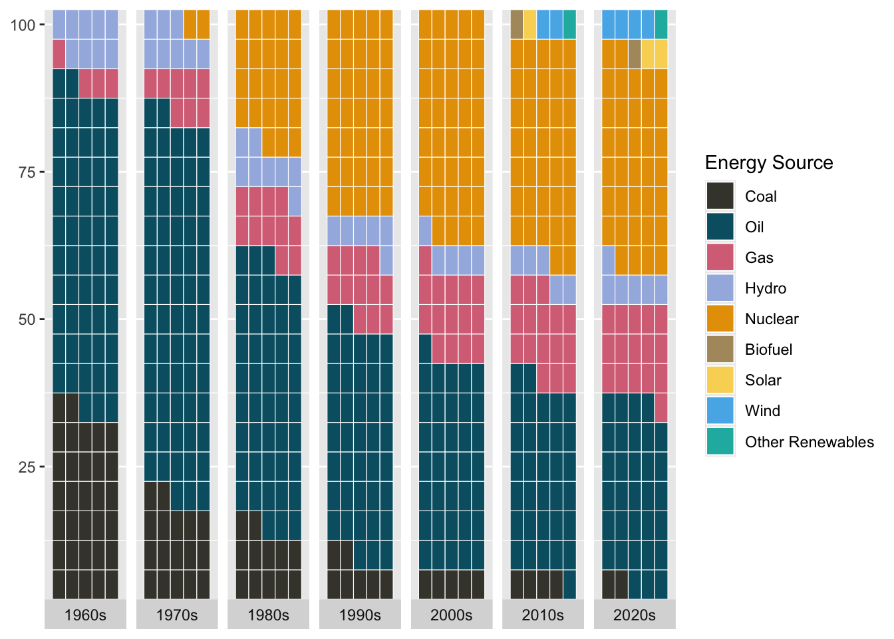
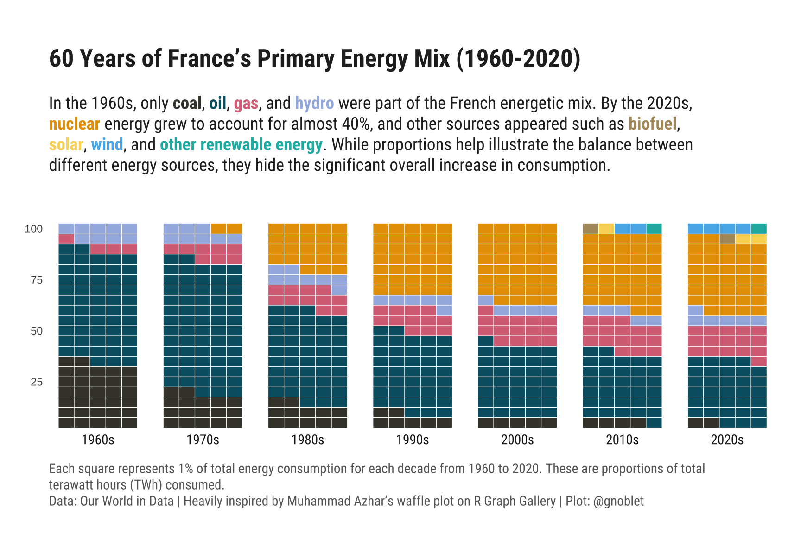
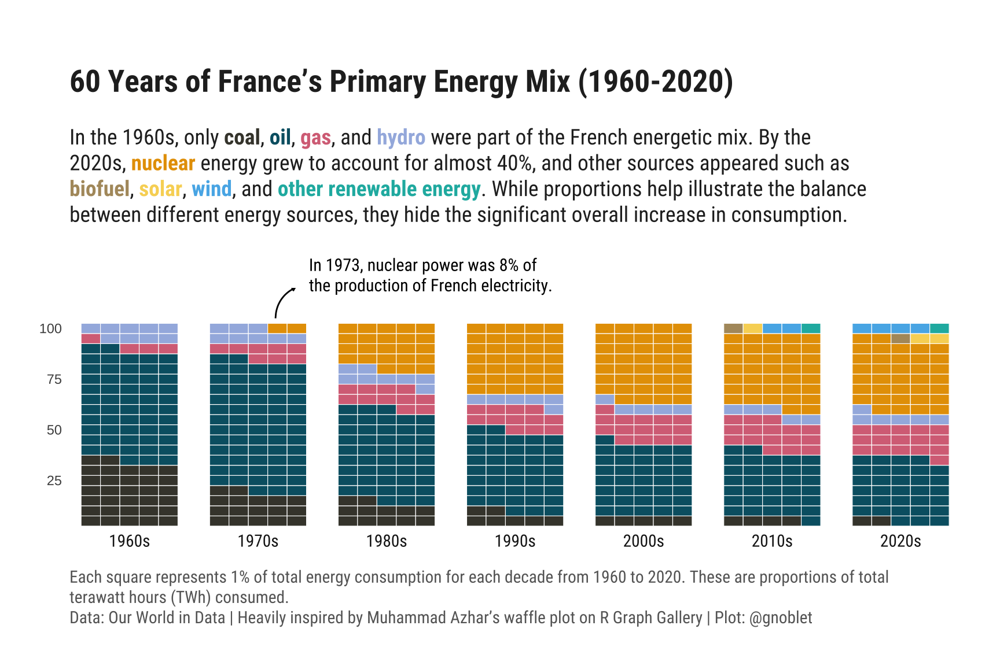

About
Today, we will be creating a waffle chart to show the relative (proportional) change of the consumption of primary energy sources in France since 1960.
This plot was heavily inspired by Muhammad Azhar’s waffle plot on the R Graph Gallery.
It is the work of Guillaume Noblet. Huge thanks to him for sharing his work here! Thanks also to Soeun Kim who helped integrate this tutorial to the gallery!
As a teaser, this is the chart we’ll be making:

Load packages
We begin by loading the necessary packages for data manipulation and
visualization. These include rio to download a csv file
from Our World in Data (we could also use the API or the R package
owidapi ), data.table for data wrangling, ggplot2
for you know what, waffle
for the waffle geometry, and ggtext
and patchwork
for text annotations and layout.
Btw, usually I use rig, renv, and
box to manage the versioning of R and R packages and for
importing functions.
library(rio) # for importing data
library(data.table) # for data wrangling
library(forcats) # to recode to factor
library(ggplot2) # for data visualization
library(waffle) # to get the waffle geometrz
library(ggtext) # to add text annotations
library(patchwork) # to combine plots
library(showtext) # to get fontsFor a sidenote, since waffle
package has been removed from CRAN,
you can install directly from GitHub by typing
remotes::install_github("hrbrmstr/waffle").
Wrangle data
As said above, we want to plot a waffle chart to display the relative (proportional) change of the consumption of primary energy sources in France since 1960. For instance, a stacked bar chart would be fine too, although it is harder to compare for a given year, aka hard to grasp exact percentages in the blink of an eye. Yet, a waffle a year would be overwhelming too, so let’s prepare data to get the sum of consumption per decade.
At the time this post is written, for the 2020 decade, proportions accounts for years 2020-2024 (not a full decade).
So, we import energy consumption data from Our World in Data and
convert it into a data.table for data wrangling. I define a
helper function to round years down to the nearest decade. This helps
group data into 10-year intervals. Now, we filter the data to include
only France since 1960 and sum the consumption by energy source for each
decade.
To round years to the nearest decade, we can remove the modulo
division of the year by 10, i.e., use the %% modulo
operator dividing by 10, and it takes precedence over the -
operator.
# import
dat <- import("https://nyc3.digitaloceanspaces.com/owid-public/data/energy/owid-energy-data.csv")
setDT(dat)
# function to round down to the nearest decade
round_to_decade <- function(year) {
return(year - year %% 10)
}
# sum consumption for france by source, every 10 years from 1900 to 2020
dat_sum <- dat[
year >= 1960 & country == "France",
lapply(.SD, function(x) sum(x, na.rm = TRUE)),
.SDcols = c("biofuel_consumption", "coal_consumption", "gas_consumption",
"hydro_consumption", "nuclear_consumption", "oil_consumption",
"other_renewable_consumption", "solar_consumption", "wind_consumption"),
by = .(country, decade = round_to_decade(year))
]Some final data wrangling is needed—or at least welcomed!
transform the data to long format to facilitate plotting;
calculate the percentage of each source within a decade;
convert percentages to integers that add up to 100 per decade;
add an ‘s’ to ‘decade’ to avoid misleading readers.
# pivot longer
dat_sum <- melt(dat_sum, id.vars = c("country", "decade"))
# consumption per year as perc of total
dat_sum[, perc := (value / sum(value)) * 100, by = .(country, decade)]
# remove NA
dat_sum <- na.omit(dat_sum, cols = "perc")
# ensure sum=100 for each decade
dat_sum <- dat_sum[, perc_int := as.integer(round(perc))][,
perc_int := {
current_sum <- sum(perc_int)
if (current_sum != 100) {
diff <- 100 - current_sum
perc_int[which.max(value)] <- perc_int[which.max(value)] + diff
}
perc_int
}, by = decade][
perc_int > 0
]
# year to character with an s for decade
dat_sum[, decade_chr := paste0(as.character(decade), "s")] Time to plot
The first questions I had thought about when I saw the data were: (1) if I were to display energy sources as fill colors, should I display all of them?, and (2) if yes, how to try out to represent these with colors that may represent the energy source for the reader (and myself as a reader).
So I first did some research, aka I DuckDuckGo-ed Petrol color and Nuclear Uranium color. With a bit of back and forth and some trials and errors (and disagreement with the DuckDuckGo results)—e.g., when two colors for two energy sources were too close—, I got to the below colors, and then factored the energy sources data.
# legend of energy
energy_sources <- c(
"Coal" = "coal_consumption",
"Oil" = "oil_consumption",
"Gas" = "gas_consumption",
"Hydro" = "hydro_consumption",
"Nuclear" = "nuclear_consumption",
"Biofuel" = "biofuel_consumption",
"Solar" = "solar_consumption",
"Wind" = "wind_consumption",
"Other Renewables" = "other_renewable_consumption"
)
energy_colors = c(
"Coal" = "#444239FF",
"Oil" = "#035F72FF",
"Gas" = "#D77186FF",
"Hydro" = "#A4B7E1FF",
"Nuclear" = "#E69F00",
"Biofuel" = "#B0986CFF",
"Solar" = "#F8D564FF",
"Wind" = "#56B4E9",
"Other Renewables" = "#1BB6AFFF"
)
# add levels and order by energy_sources
dat_sum <- dat_sum[,
variable := factor(
fct_recode(variable, !!!energy_sources),
levels = names(energy_sources)
)
]
setorder(dat_sum, decade, variable)Onto the waffle chart.
The base plot is a simple waffle chart with facets per
decade and a fill colors per energy source.
Since I want the waffle chart to somewhat be a time series
chart, I use only one row with a strip text at the bottom for
the facets, and 5 blocks/squares per row (hence the y-scale must be
modified).
g <- ggplot(dat_sum, aes(fill = variable, values = perc_int)) +
geom_waffle(
color = "white",
size = 0.2,
n_rows = 5,
flip = TRUE,
make_proportional = FALSE
) +
# since
facet_wrap(
~decade_chr,
nrow = 1,
strip.position = "bottom"
) +
scale_x_discrete() +
scale_y_continuous(
labels = function(x) x * 5,
expand = c(0,0)) +
scale_fill_manual(
values = energy_colors,
breaks = names(energy_sources),
name = "Energy Source",
drop = FALSE
)
g
Next, let’s refine the layout by adding some titles, and font and theming options. For the subtitle, I add color-coded references to the energy sources, so it serves as a legend (maybe a legend would still be needed though?).
# and html string
subtitle_text <- glue::glue(
"
In the 1960s, only <span style='color:{energy_colors['Coal']};'><strong>coal</strong></span>,
<span style='color:{energy_colors['Oil']};'><strong>oil</strong></span>,
<span style='color:{energy_colors['Gas']};'><strong>gas</strong></span>, and
<span style='color:{energy_colors['Hydro']};'><strong>hydro</strong></span>
were part of the French energetic mix. By the 2020s,
<span style='color:{energy_colors['Nuclear']};'><strong>nuclear</strong></span>
energy grew to account for almost 40%, and other sources appeared such as
<span style='color:{energy_colors['Biofuel']};'><strong>biofuel</strong></span>,
<span style='color:{energy_colors['Solar']};'><strong>solar</strong></span>,
<span style='color:{energy_colors['Wind']};'><strong>wind</strong></span>, and
<span style='color:{energy_colors['Other Renewables']};'><strong>other renewable energy</strong></span>.
While proportions help illustrate the balance between different energy sources,
they hide the significant overall increase in consumption.
")
# Fonts
font_add_google("Roboto Condensed", "Roboto Condensed")
showtext_auto()
showtext_opts(dpi = 600)
body_font <- "Roboto Condensed"
title_font <- "Roboto Condensed"
# Plot
g <- g +
theme_minimal() +
labs(
title = "60 Years of France's Primary Energy Mix (1960-2020)",
subtitle = subtitle_text,
caption = "Each square represents 1% of total energy consumption for each decade from 1960 to 2020. These are proportions of total terawatt hours (TWh) consumed.<br>Data: Our World in Data | Heavily inspired by Muhammad Azhar's waffle plot on R Graph Gallery | Plot: @gnoblet"
) +
theme(
panel.grid = element_blank(),
axis.title = element_blank(),
axis.text.x = element_text(family = body_font, size = 12),
strip.text = element_text(family = body_font, size = 11),
legend.position = "none",
plot.title = element_textbox_simple(
hjust = 0,
margin = margin(20, 0, 10, 0),
size = 20,
family = title_font,
face = "bold",
color = "grey15",
width = unit(0.9, "npc")
),
plot.subtitle = element_textbox_simple(
hjust = 0,
margin = margin(10, 0, 40, 0),
width = unit(0.9, "npc"),
size = 14,
family = body_font,
color = "grey15"),
plot.caption = element_textbox_simple(
family = body_font,
face ="plain",
size = 11,
color = "grey40",
hjust = 0,
width =unit(0.95, "npc"),
margin = margin(10, 0, 0, 0)
),
plot.background = element_rect(color = "white", fill = "white"),
plot.margin = margin(20, 20, 20, 20)
)
g
To wrap up this plot, let’s add one annotation to
stress out the singular French context on nuclear energy and this
surging proportion. I add here the arrow as a geom_curve
onto the 1970s facet and then add the text with
geom_richtext over the whole plot using patchwork.
Other options are possible (and most likely more efficient ones).
g <- g +
geom_curve(
data = data.frame(x = 3.9, y = 21, xend = 4.9, yend = 24, decade_chr = "1970s"),
aes(x = x, y = y, xend = xend, yend = yend),
arrow = arrow(length = unit(0.03, "npc")),
curvature = -0.3,
color = "black",
inherit.aes = FALSE
)g <- g + inset_element(
ggplot() +
geom_richtext(
aes(
x = 0.30,
y = 0.55,
label = "<span style='font-size:15px;'>In 1973, nuclear power was 8% of<br>the production of French electricity.</span>"
),
fill = NA,
label.color = NA,
vjust = 0,
hjust = 0,
family = body_font
) +
theme_void() +
coord_cartesian(xlim = c(0, 1), ylim = c(0, 1), expand = FALSE),
left = 0, right = 1, bottom = 0, top = 1, align_to = 'full'
)
g
And here is the final result! A simple annotation makes the chart much more reader-friendly!
Going further
This post explains how to create a waffle chart as a distribution of energy over time.
Make sure to check out the heavily inspired previous post about waffle chart for evolution as well.
If you want to learn more, you can also check the waffle section of the gallery and on how to represent the distribution of several groups using a mix between a waffle chart and a histogram.